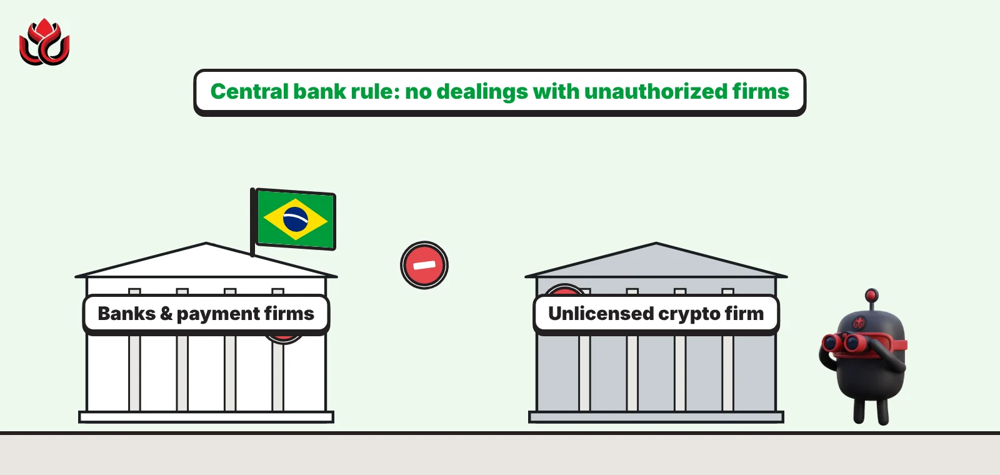

Brazil's crypto license deadline has passed. From November 6, banks must drop unlicensed firms
Crypto firms already operating in Brazil had until October 30, 2026, to file for central bank authorization. From November 6, banks and payment firms may no longer deal with unauthorized providers, and late filers get 30 days at most.

Key points
- Crypto firms already active in Brazil had until October 30, 2026, to file for central bank authorization.
- From November 6, 2026, Brazilian banks and payment firms may not deal with unauthorized crypto providers, cutting them off from the real.
- Late filers can operate for 30 days at most, and from January 1, 2027, applicants must send client balances and proof of reserves.
The deadline
Crypto firms already operating in Brazil had until Friday, October 30, 2026, to file for authorization with the Banco Central do Brasil. From November 6, banks and payment firms may no longer deal with crypto providers that lack it. The filing lets existing virtual asset service providers, known in Brazil as PSAVs, keep running while the central bank reviews them.
The deadline comes from Resolution BCB 520 of November 10, 2025, which sets out how crypto service providers are formed and run. It gave firms already active in the market 270 days from the date the rules took effect to make a formal filing. The rules took effect on February 2, 2026, according to the central bank's presentation, so the window closed on October 30.
The central bank's board confirmed in September that October 2026 was the final month for existing PSAVs to apply, in a vote on a related reporting rule (Voto 107/2026).
The November 6 cutoff
The deadline has teeth because of a second date. Resolution BCB 589, dated September 23, 2026, rewrote Article 91 of the rules. From November 6, 2026, financial institutions, payment institutions and any other firm authorized by the central bank may not carry out or enable crypto operations whose counterparties are unauthorized crypto service providers, except where the rules expressly allow it. That change took effect on October 1.
In practice, a crypto platform that has neither a license nor a pending request risks losing access to Brazilian banks and payment accounts, the rails it needs to move reais in and out.
Resolution 520 also sets limits for late filers. A firm that did not file on time may continue offering crypto services for no more than 30 days after the deadline. The central bank can also order a firm to stop operating within 30 days of a notice, for example if it fails the rules' requirements.

What applicants must send from 2027
Resolution 589 also adds new reporting duties that start on January 1, 2027. From the moment they file an authorization request, providers will have to send the central bank:
- balances they hold on behalf of clients and users;
- data on the crypto assets they hold in custody, in Brazil or abroad, by quantity and value, including totals for each client;
- verifiable proof of reserves for each crypto asset held for clients;
- verifiable figures on client assets used for staking, where the firm offers it.
Proof of reserves means showing, in a way that can be checked, that a platform actually holds the assets its customers believe they own. The central bank will set the exact format in separate rules.
New rules for stablecoins and self-custody wallets
Brazil's framework does more than license exchanges. A companion rule, Resolution BCB 521, brings some crypto activity into the foreign exchange market. The central bank's presentation lists international payments or transfers in crypto, transfers to settle international card bills, transfers to or from self-custody wallets, and buying, selling or swapping tokens referenced to a fiat currency, such as dollar stablecoins. Only PSAVs authorized for the FX market may do these operations, and they must identify the people behind self-custody wallets they deal with.
A related rule started on October 1, 2026. Providers must report to Coaf, Brazil's financial intelligence unit, any transfer of US$10,000 or more to or from a self-custody wallet, without first screening it. The central bank's board said self-custody gives providers less information for monitoring than custodial accounts, according to Voto 107/2026. The same threshold already allowed providers to hold such transfers for up to 24 hours under Resolution BCB 584.

Timeline
Central bank publishes crypto service provider rules (Resolutions 519, 520, 521)
Rules take effect; 270-day window for existing firms begins
Resolution BCB 589 sets the November 6 bank cutoff
Coaf reporting of US$10,000+ self-custody transfers begins
Deadline for existing providers to file
Supervised institutions barred from dealing with unauthorized providers
Last day late filers may operate (30 days after the deadline)
Client balance, custody and proof-of-reserve reporting begins
LC Insight analysis
This section is our reading of the facts above, not a statement of fact.
- The November 6 rule is the real enforcement tool. Without banks and payment accounts, an unlicensed exchange cannot move reais in or out, so the rule bites before the central bank finishes a single review.
- Filing is not approval. We expect consolidation over the coming months, as smaller platforms that cannot meet capital, governance and reporting rules close, sell or partner with licensed firms.
- Proof of reserves from January 2027 is the step users should care about. If enforced well, Brazilians will get a checkable answer to the most important question about any exchange: does it hold what it owes them?
What's next
- The central bank's first official count of authorization requests
- Which platforms announce exits before the 30-day limit for late filers
- Rules setting the format for proof-of-reserve and custody reporting
- Any central bank orders to cease operations
Disclaimer. This article is based on public information and the sources listed below as of the update time shown. It is for information only and is not investment, legal or tax advice. Figures may change as companies and authorities publish new data.
Sources
- Banco Central do Brasil, Resolução BCB nº 520 (November 10, 2025)
- Banco Central do Brasil, Resolução BCB nº 589 (September 23, 2026)
- Banco Central do Brasil, Resolução BCB nº 521 (November 10, 2025)
- Banco Central do Brasil, Presentation on virtual asset service rules (November 10, 2025)
- Banco Central do Brasil, Voto 107/2026 (September 22, 2026)